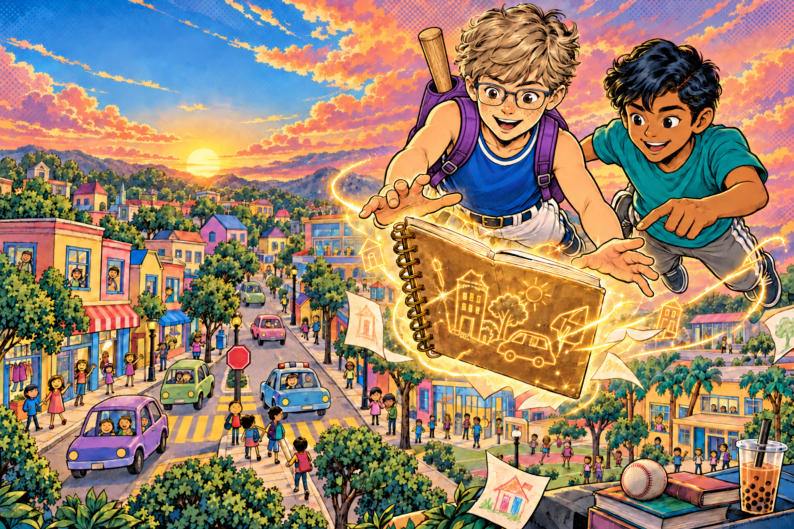

ТВОИ РИСУНКИ. ТВОИ ПРИКЛЮЧЕНИЯ.
Целый город.
С любовью.
Подарок от мамы — мир, который начался с твоих рисунков. Исследуй его, встречай друзей и разгадывай ребусы.
Подарок от мамы
НАРИСОВАЛ МАРК.ОЖИВИЛИ С ЛЮБОВЬЮ.
ТВОИ РИСУНКИ. ТВОИ ПРИКЛЮЧЕНИЯ.
Подарок от мамы — мир, который начался с твоих рисунков. Исследуй его, встречай друзей и разгадывай ребусы.
Подарок от мамы
НАРИСОВАЛ МАРК.